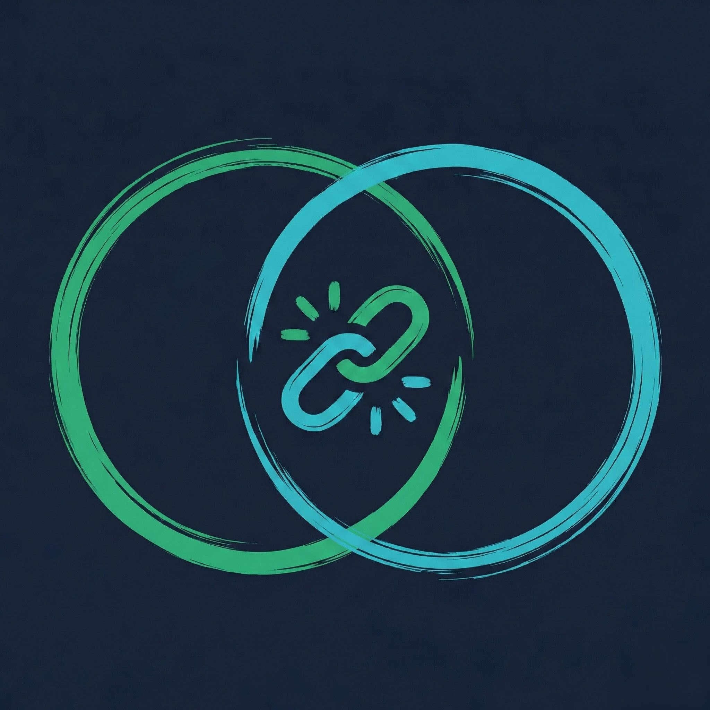

SkillLinkr OMS connects college societies, Campus Ambassadors, and administrators through a structured, college-specific workflow so trusted opportunities can reach students faster.
group Submitted by KIIT Robotics Society
AMBASSADOR LINE-ITEM AUDIT
Create an uncompromised verification layer before an opportunity reaches students. No misleading dates, outdated registration links, or unverified student clubs.
Replace scattered manual coordination and messy WhatsApp announcements with a clear submission, line-item correction, and review workflow.
Allow SkillLinkr to expand across hundreds of colleges without central Admins manually reviewing every single listing. Local ambassadors handle local trust.
Clean architectural separation between creators, college auditors, and institutional network overseers.
Unidirectional trust verification with decentralized execution and immutable central logging.
Global control across the entire network. Adds & manages Campus Ambassadors and societies, oversees colleges, monitors opportunities across the platform, and handles system-wide governance.
College-level verifier. Can manage societies and opportunities only for their own college. Reviews submissions, requests corrections, approves or rejects opportunities.
Opportunity creator. Creates and submits opportunities for its college, uploads full details and posters, tracks review status, responds to correction requests, and manages its own listings.
From first student club draft to live verified discovery, every opportunity follows an automated, transparent pipeline.
Multi-step guided form capturing title, category, eligibility criteria, dates, mode, venue, registration URL, student perks, and promotional posters.
Submission triggers automated tenancy routing, dispatching the opportunity directly into the specific college’s exclusive review inbox.
Local student ambassador on that campus conducts line-item audit: organizer identity, booking confirmation, URL integrity, and eligibility clarity.
Ambassador executes instant approval, requests line-item field corrections (with direct feedback), or rejects fraudulent or non-compliant events.
Same-college ambassador approval instantly changes record state to Published without requiring central Admin manual intervention or bottlenecking.
Real-time synchronization into SkillLinkr student opportunity mobile & web feed, complete with official College-Verified Badge.
A student ambassador at KIIT can only review KIIT societies. A VIT administrator can only review VIT data. Campus boundaries are unbreachable.
"College access must be enforced in the interface, API/server authorization, and database/RLS—not just hidden in the UI."
Reads & mutates records matching: institution_id == 'KIIT-094'.
Cross-institution queries strictly drop at PostgreSQL RLS layer. No row data exposed.
Foreign organization edit request blocked. Authorization context mismatch logged to Audit.
Purpose-built workspaces optimized for the unique daily operational tasks of each campus role.
Empowering organizers to put their best foot forward.
High-velocity audit queue for verified campus curators.
Institutional oversight and systemic governance controls.
Real-time network operational metrics across 50+ onboarded institutions.
Submitted drafts vs. approved live opportunities across campus cohorts.
Engineered to institutional standards with the agility of enterprise software.
Deterministic permissions for Admin, Ambassador, and Society actors.
Strict tenant sandboxing prevents cross-campus data leakage or misactions.
Guided wizard handles dates, criteria, tags, and promotional graphics.
Multi-action decision engine with targeted correction requests.
Instant live sync upon local ambassador review without central bottlenecks.
Clear real-time stages: Draft, In Review, Needs Action, and Live.
Instant alerts for revision requests, approval notifications, and deadlines.
Every change, approval, and rejection is permanently attributed and logged.
Fast, cached delivery of verified campus events to students.
Ready to scale across 1,000+ universities without degradation.
"SkillLinkr OMS is the operational backbone for campus opportunities. It gives societies an easy publishing workflow, Campus Ambassadors a college-specific verification system, and Admins a scalable governance layer—ensuring every opportunity reaching students is authentic, complete, and on-time."
Empower student societies, secure your college brand, and give your student body immediate access to verified competitions, internships, and workshops.